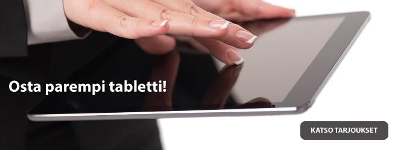
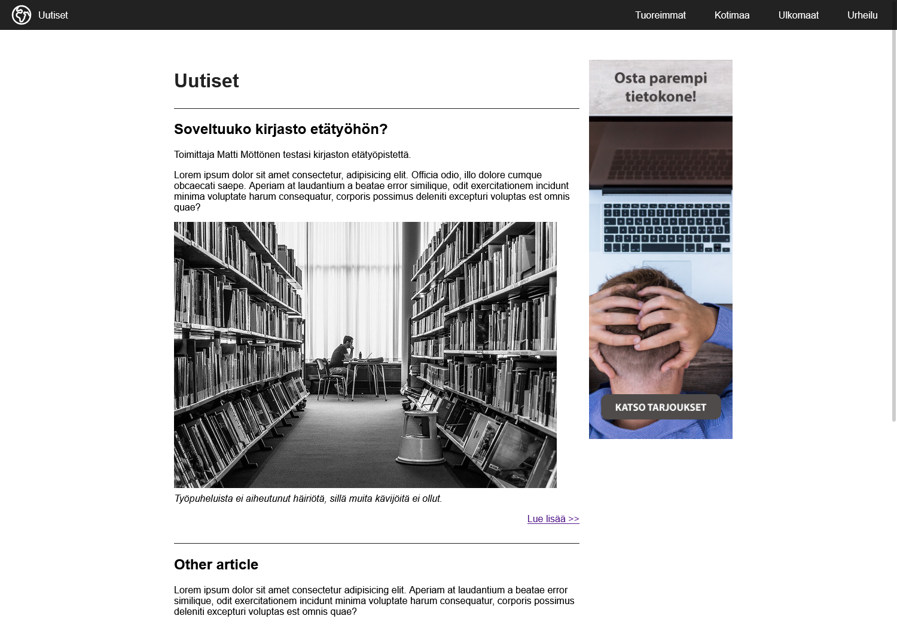
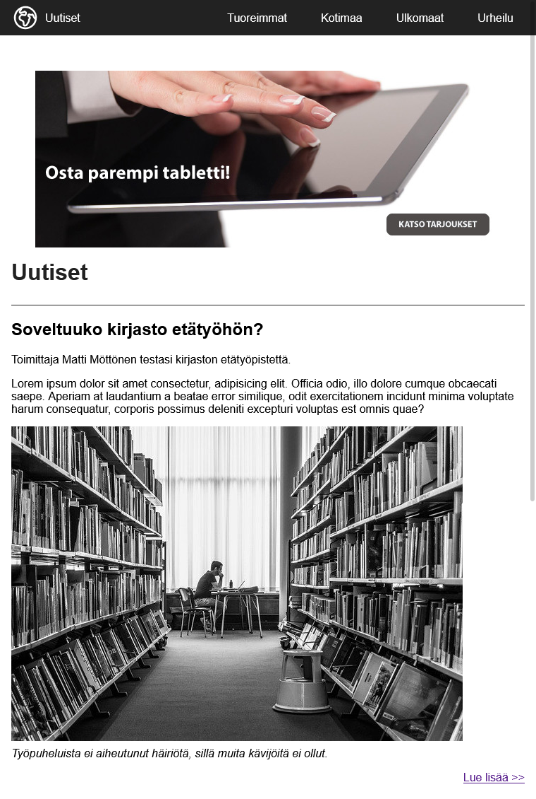
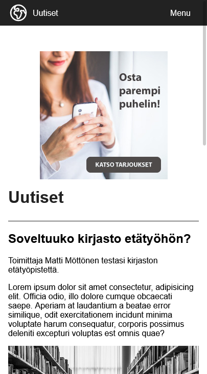

CSS Media Queries
svg-icons: heroicons
Teoria
- Tutustu CSS Media Queryihin w3schools-sivulla Media Query: w3schools
- CSS media queryllä voidaan merkitä CSS-koodiin käyttäjän ruudun/ikkunan leveydestä riippuvaiset tyylit
- Voit havainnoida seuraavien CSS-esimerkkien toimintalogiikan muuttamalla tämän selainikkunan leveyttä
/* Tyylit, jotka eivät ole media queryn sisällä,
ovat voimassa oletuksena. */
body{
background-color: green;
}
@media only screen and (max-width: 900px) {
/* Nämä tyylit astuvat voimaan,
vasta kun käyttäjän ikkunan leveys
alittaa 900 pikseliä */
body{
background-color: yellow;
}
}
@media only screen and (max-width: 600px) {
/* Nämä tyylit astuvat voimaan,
vasta kun käyttäjän ikkunan leveys
alittaa 600 pikseliä */
body{
background-color: red;
}
}
Tehtävä

Työpöytä-näkymä

Tabletti-näkymä

Puhelin-näkymä
